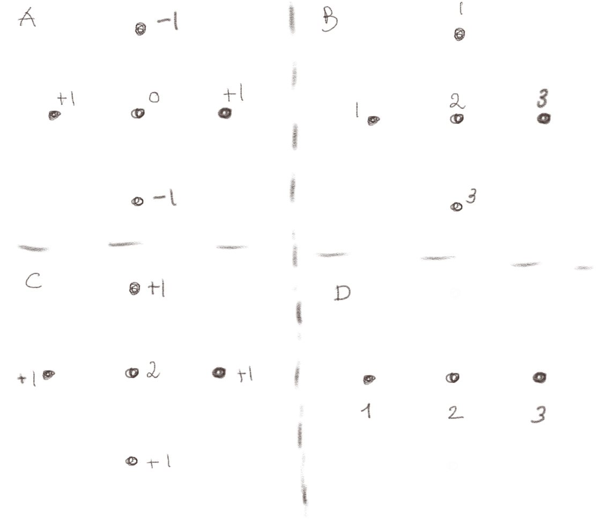

(Lærebok 5.5.1)

Figuren viser verdiene for \( V_{i,j} \) for fire forskjellige systemer. Hvilke av disse kan være løsningen av Laplace likning?
a) A (ja/nei)
Ja
Vi ser på summen av det som ligger rundt sentrum og finner at: $$ \begin{equation} V_{i+1,j} + V_{i-1,j} + V_{i,j+1} + V_{i,j-1} = +1+1-1-1=0 = 4 V_{i,j} = 4 \times 0 \; . \tag{11} \end{equation} $$ Dette stemmer, så dette kan være en løsning.
b) B (ja/nei)
Ja
Vi ser på summen av det som ligger rundt sentrum og finner at: $$ \begin{equation} \frac{1}{4}\left( V_{i+1,j} + V_{i-1,j} + V_{i,j+1} + V_{i,j-1} \right) = \frac{1}{4}\left( 3+1+1+3 \right) = 2 = V_{i,j} \; . \tag{12} \end{equation} $$ Dette stemmer, så dette kan være en løsning.
c) C (ja/nei)
Nei
Vi ser på summen av det som ligger rundt sentrum og finner at: $$ \begin{equation} \frac{1}{4}\left( V_{i+1,j} + V_{i-1,j} + V_{i,j+1} + V_{i,j-1} \right) = \frac{1}{4}\left(1+1+1+1 \right) = 1 \neq V_{i,j} \; . \tag{13} \end{equation} $$ Dette stemmer ikke, så dette kan ikke være en løsning.
d) D (ja/nei)
Ja
Dette er et en-dimensjonalt system, slik at vi kun summerer de to omliggende verdiene, \( V_{i+1} \) og \( V_{i-1} \) og finner gjennomsnittet ved å dele på 2: $$ \begin{equation} \frac{1}{2}\left( V_{i+1} + V_{i-1} \right) = \frac{1}{2}\left(3+1 \right) = 2 = V_{i} \; . \tag{14} \end{equation} $$ Dette stemmer, så dette kan være en løsning.
(Lærebok 5.5.3)
Ta utgangspunkt i programmet som ble utviklet i den forelesningen over.
a)
Sett opp et nytt sett med grensebetingelser hvor \( V = 0 \) på ytterkanten og \( V = 1 \) i ett enkelt punkt i midten. Lag et plot av b for å vise at du har laget riktige grensebetingelser.
b) Finn det elektriske potensialet \( V \), visualiser dette. Finn det elektriske feltet \( \vec{E} \) og visualiser dette i den samme figuren som \( V \).